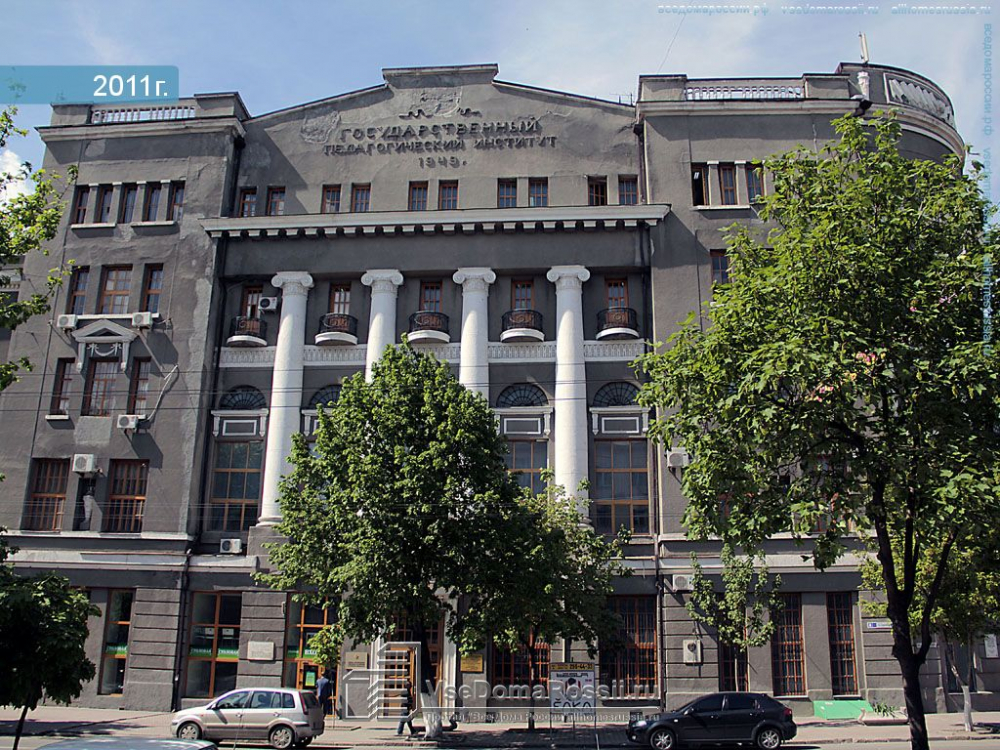

Образование
А это - институт, где я провела пять незабываемых лет своей жизни. В 2006 году он стал называться Южным федеральным университетом. Находится в Ростове-на-Дону. Здесь я получила степень Бакалавра образования. с квалификацией Учитель по специальности “Филология”, иностранные Языки (английский и французский)
Я выражаю благодарность создателям сайта vsedomarossii.ru за фото, которое можно найти в свободном доступе в поисковиках.